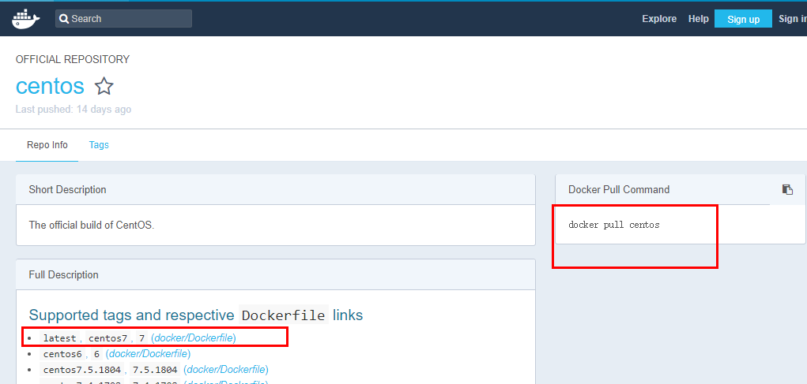
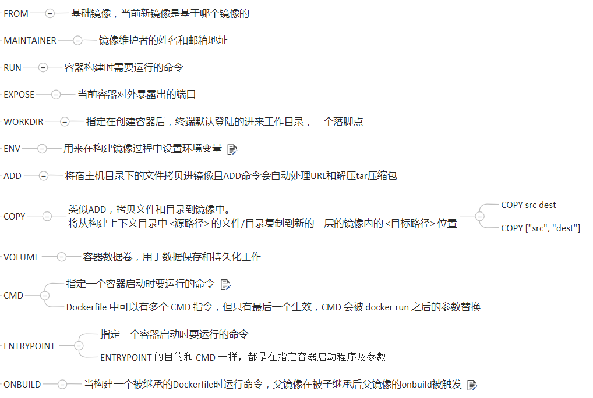

1.DockerFile简介
DockerFile是用来构建Docker镜像的构建文件，是由系一列命令和参数构成的脚本。例如CentOS为例

2.Docker体系结构

3.自定义comcat9镜像
1.准备apache-tomcat9.0.8.tar.gz和jdk-8u171-linux-x64.tar.gz
2.mkdir -p /mydockerfile/tomcat9，将准备文件放在指定目录下
3.在指定目录下新建一个c.txt（用做数据共享）和Dockerfile文件
#父镜像为centos
FROM centos
MAINTAINER zzyy<zzyybs@126.com>
#把宿主机当前上下文的c.txt拷贝到容器/usr/local/路径下
COPY c.txt /usr/local/cincontainer.txt
#把java与tomcat添加到容器中
ADD jdk-8u171-linux-x64.tar.gz /usr/local/
ADD apache-tomcat-9.0.8.tar.gz /usr/local/
#安装vim编辑器
RUN yum -y install vim
#设置工作访问时候的WORKDIR路径，登录落脚点
ENV MYPATH /usr/local
WORKDIR $MYPATH
#配置java与tomcat环境变量
ENV JAVA_HOME /usr/local/jdk1.8.0_171
ENV CLASSPATH $JAVA_HOME/lib/dt.jar:$JAVA_HOME/lib/tools.jar
ENV CATALINA_HOME /usr/local/apache-tomcat-9.0.8
ENV CATALINA_BASE /usr/local/apache-tomcat-9.0.8
ENV PATH $PATH:$JAVA_HOME/bin:$CATALINA_HOME/lib:$CATALINA_HOME/bin
#容器运行时监听的端口
EXPOSE 8080
#启动时运行tomcat
# ENTRYPOINT ["/usr/local/apache-tomcat-9.0.8/bin/startup.sh" ]
# CMD ["/usr/local/apache-tomcat-9.0.8/bin/catalina.sh","run"]
CMD /usr/local/apache-tomcat-9.0.8/bin/startup.sh && tail -F /usr/local/apache-tomcat-9.0.8/bin/logs/catalina.out
4.docker build -t mytomcat9 .
5.docker run -d -p 9080:8080 –name myt9
-v /mydockerfile/tomcat9/test:/usr/local/apache-tomcat-9.0.8/webapps/test
-v /mydockerfile/tomcat9/tomcat9logs/:/usr/local/apache-tomcat-9.0.8/logs
–privileged=true mytomcat9
在**/mydockerfile/tomcat9/test**内就可以编写项目了
**/mydockerfile/tomcat9/tomcat9logs/**映射tomcat的日志